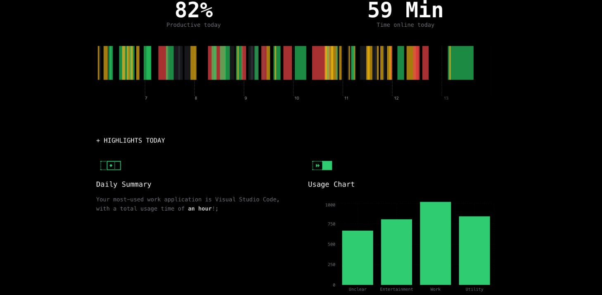

It wasn't until I started driving that I realized I wanted to pursue a career toward Cybersecurity in some regard. While driving, my brain instinctively seeks out the potential risks for each moment in time, as any slight imperfection could lead to harm. My situational awareness has trained me to mitigate as many risks as possible while driving. Just as I minimize risks on the road, I'm driven by the same strategic awareness to defend the digital world, which aligns perfectly with the principles of Cybersecurity & Risk Management.
I'm currently working toward two Bachelor's degrees at The University of Texas at Dallas: Information Technology Systems with a concentration in Cybersecurity Management & Finance with a concentration in Risk Management & Cybersecurity.
Attempting to learn how to use Scapy & Firebase, as well as working toward my AWS certification.
Education Division Mentor
Providing guidance to two underclassmen on resume building, academic planning, industry expectations, and fundamental Python practices while developing and sharing educational resources to support their coursework and personal projects
Software Team Member
Utilizing Python with libraries like Plotly and Pandas to analyze, clean, and visualize CSVs and CAN Bus logs of vehicle dynamics data to simplify metrics data for the engineers to improve the car while automating file management tasks in Linux by writing commands to locate, filter, and organize data files — streamlining workflows and boosting efficiency.
Active Member
Participating in weekly meetings to develop ethical hacking skills through hands-on experience with tools like Ubuntu and Wireshark, completing Capture the Flag (CTF) challenges in virtual environments, and engaging with peers and professionals through guest lectures and discussions focused on practical cybersecurity techniques.
At HackTX, my friends and I got second place in Intel's 'Best Use of AI Challenge' for developing a lightweight screen-time analysis web application within 25 hours. The app utilized Intel's NPUs with OpenVINO to allow for real-time productivity classification of user activity using a multimodal LLM, optimizing time management and visualizing productivity.
Followed a YouTube tutorial by 'faanross' to develop Python scripts that simulate a firewall, Nimda Worm attacks, & packet flooding. The firewall works to blacklist & log Nimda worm source IPs, sniff packets to analyze & manage them, & block IPs responsible for DOS attacks.
In the future, I plan to build upon this framework by adding text/email alerting as well as a web dashboard that visualizes the data collected. With this, I aim to improve my skills with Python libraries like Pandas & Plotly, as well as learn how to use Flask & API calls.
When I have free time, I love to play basketball as well as read manga & play video games of possibly all genres.
The House in Fata Morgana, by Keika Hanada.
My Manga Library Here
Batman: Arkham Asylum, from Rocksteady
Persona 5 Royal, from Atlus
Final Fantasy VII, from Square Enix